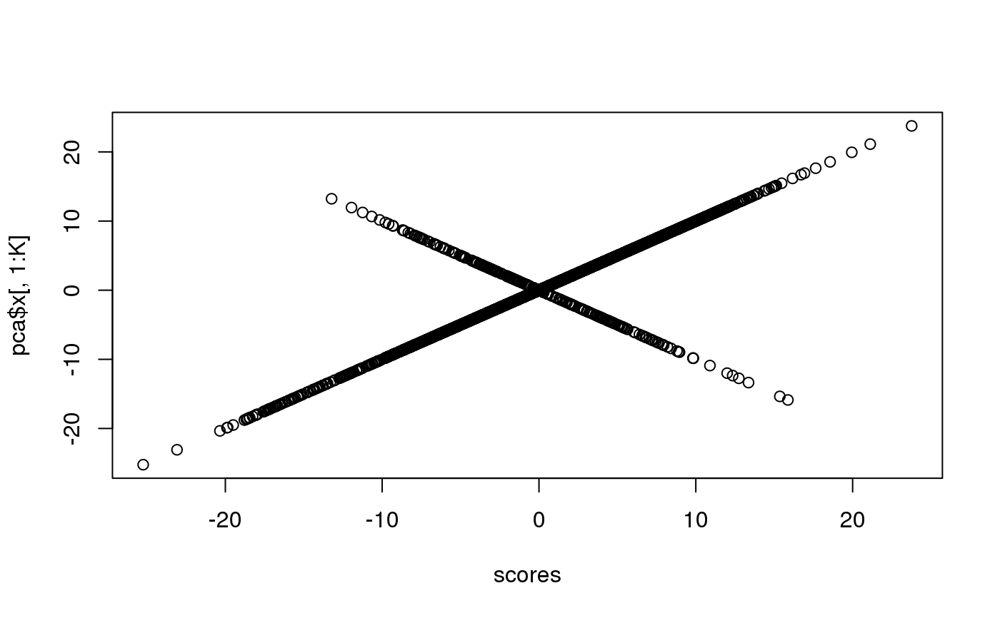
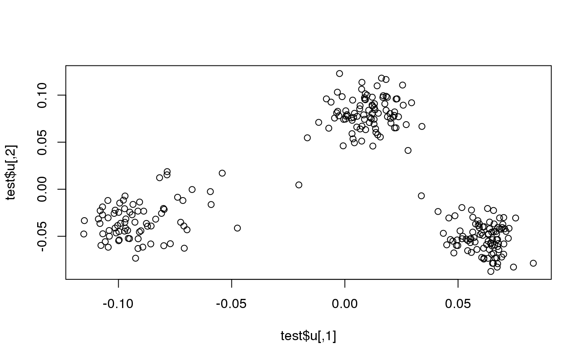
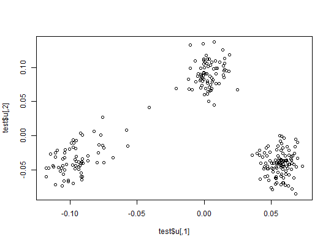
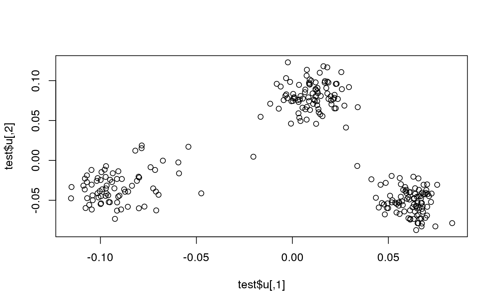
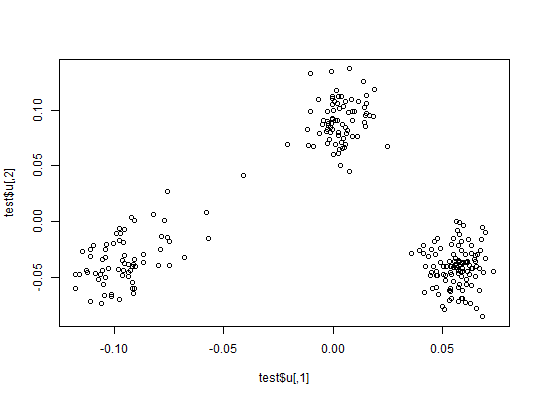

An algorithm for partial SVD (or PCA) of a Filebacked Big Matrix based on the
algorithm in RSpectra (by Yixuan Qiu and Jiali Mei).
This algorithm is linear in time in all dimensions and is very
memory-efficient. Thus, it can be used on very large big.matrices.
big_randomSVD(
X,
fun.scaling = big_scale(center = FALSE, scale = FALSE),
ind.row = rows_along(X),
ind.col = cols_along(X),
k = 10,
tol = 1e-04,
verbose = FALSE,
ncores = 1,
fun.prod = big_prodVec,
fun.cprod = big_cprodVec
)Arguments
- X
An object of class FBM.
- fun.scaling
A function with parameters
X,ind.rowandind.col, and that returns a data.frame with$centerand$scalefor the columns corresponding toind.col, to scale each of their elements such as followed: $$\frac{X_{i,j} - center_j}{scale_j}.$$ Default doesn't use any scaling. You can also provide your owncenterandscaleby usingas_scaling_fun().- ind.row
An optional vector of the row indices that are used. If not specified, all rows are used. Don't use negative indices.
- ind.col
An optional vector of the column indices that are used. If not specified, all columns are used. Don't use negative indices.
- k
Number of singular vectors/values to compute. Default is
10. This algorithm should be used to compute only a few singular vectors/values.- tol
Precision parameter of svds. Default is
1e-4.- verbose
Should some progress be printed? Default is
FALSE.- ncores
Number of cores used. Default doesn't use parallelism. You may use nb_cores.
- fun.prod
Function that takes 6 arguments (in this order):
a matrix-like object
X,a vector
x,a vector of row indices
ind.rowofX,a vector of column indices
ind.colofX,a vector of column centers (corresponding to
ind.col),a vector of column scales (corresponding to
ind.col), and compute the product ofX(subsetted and scaled) withx.
- fun.cprod
Same as
fun.prod, but for the transpose ofX.
Value
A named list (an S3 class "big_SVD") of
d, the singular values,u, the left singular vectors,v, the right singular vectors,niter, the number of the iteration of the algorithm,nops, number of Matrix-Vector multiplications used,center, the centering vector,scale, the scaling vector.
Note that to obtain the Principal Components, you must use predict on the result. See examples.
Note
The idea of using this Implicitly Restarted Arnoldi Method algorithm
comes from G. Abraham, Y. Qiu, and M. Inouye,
FlashPCA2: principal component analysis of biobank-scale genotype datasets,
bioRxiv: doi:10.1101/094714
.
It proved to be faster than our implementation of the "blanczos" algorithm
in Rokhlin, V., Szlam, A., & Tygert, M. (2010).
A Randomized Algorithm for Principal Component Analysis.
SIAM Journal on Matrix Analysis and Applications, 31(3), 1100-1124.
doi:10.1137/080736417
.
See also
Examples
set.seed(1)
X <- big_attachExtdata()
K <- 10
# Using only half of the data for "training"
n <- nrow(X)
ind <- sort(sample(n, n/2))
test <- big_randomSVD(X, fun.scaling = big_scale(), ind.row = ind, k = K)
str(test)
#> List of 7
#> $ d : num [1:10] 178.5 114.5 91 87.1 86.3 ...
#> $ u : num [1:258, 1:10] -0.1092 -0.0928 -0.0806 -0.0796 -0.1028 ...
#> $ v : num [1:4542, 1:10] 0.00607 0.00739 0.02921 -0.01283 0.01473 ...
#> $ niter : num 9
#> $ nops : num 162
#> $ center: num [1:4542] 1.34 1.63 1.51 1.64 1.09 ...
#> $ scale : num [1:4542] 0.665 0.551 0.631 0.55 0.708 ...
#> - attr(*, "class")= chr "big_SVD"
pca <- prcomp(X[ind, ], center = TRUE, scale. = TRUE)
# same scaling
all.equal(test$center, pca$center)
#> [1] TRUE
all.equal(test$scale, pca$scale)
#> [1] TRUE
# use this function to predict scores
class(test)
#> [1] "big_SVD"
scores <- predict(test)
# scores and loadings are the same or opposite
plot(scores, pca$x[, 1:K])

plot(test$v, pca$rotation[, 1:K])
 plot(test$u)

plot(test, type = "scores")

# projecting on new data
ind2 <- setdiff(rows_along(X), ind)
scores.test2 <- predict(test, X, ind.row = ind2)
scores.test3 <- predict(pca, X[-ind, ])
plot(scores.test2, scores.test3[, 1:K])
plot(test$u)

plot(test, type = "scores")

# projecting on new data
ind2 <- setdiff(rows_along(X), ind)
scores.test2 <- predict(test, X, ind.row = ind2)
scores.test3 <- predict(pca, X[-ind, ])
plot(scores.test2, scores.test3[, 1:K])